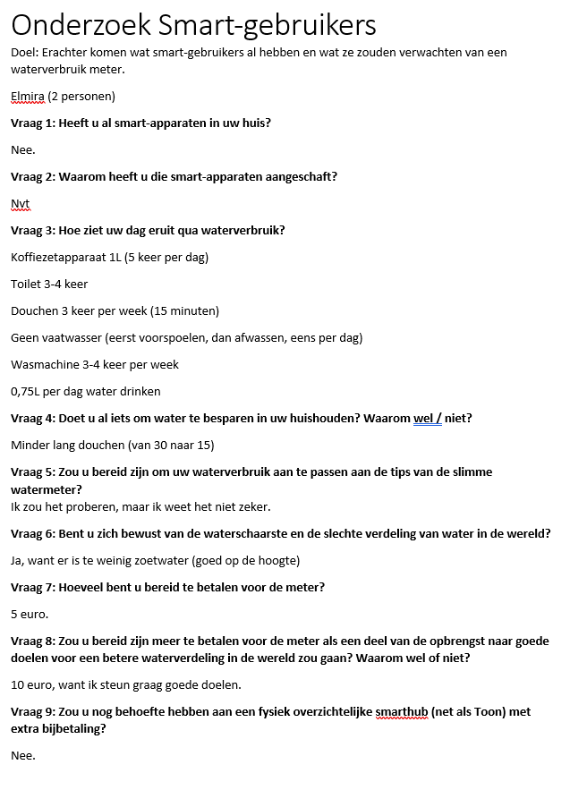
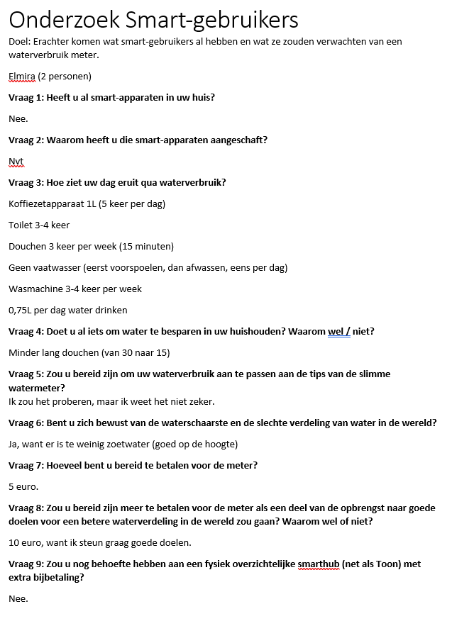
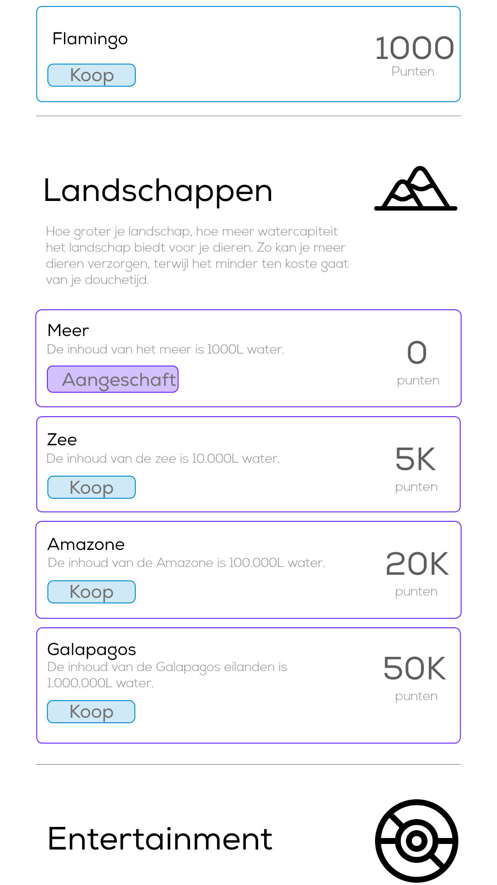
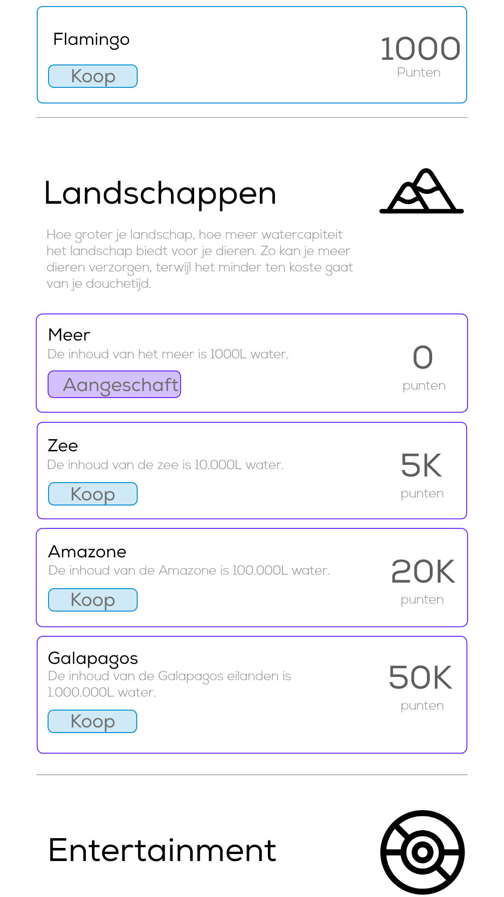
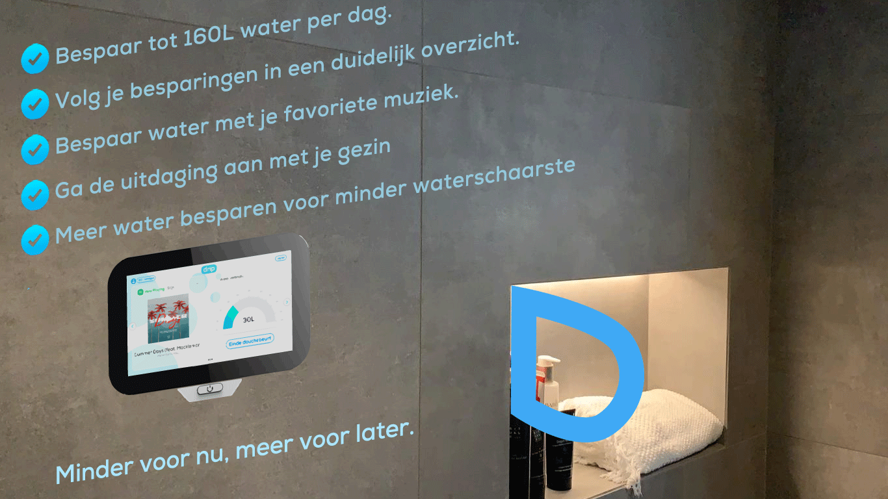
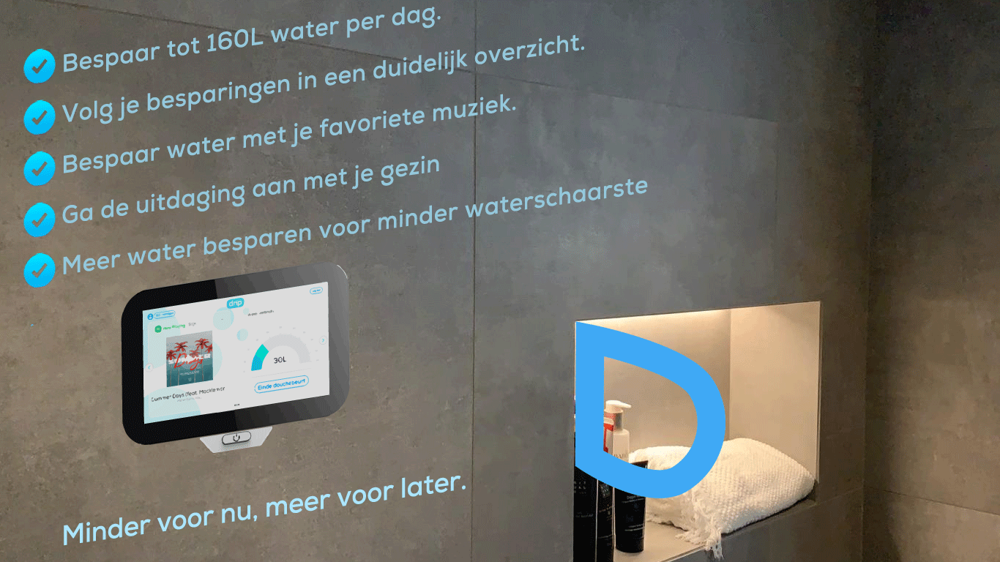

Ik heb een uitgebreid doelgroeponderzoek gedaan, zodat we een idee krijgen op welke sociale media onze doelgroep zit en waar we het beste op kunnen adverteren en op welke manier. Zo heb ik ideele posters ontworpen en commerciele posters: de ideele posters voor mensen die nog niet bezig zijn met- of bewust zijn van hun waterverbruik, om ze aan het denken te zetten over de actuele situatie omtrend waterschaarste en droogte en de commerciele posters om de mensen die al op de hoogte zijn van het milieu en de droogte tot kopen te motiveren.
Verder heb ik onderzoek gedaan naar de actuele waterproblemen in Nederland. Deze nieuwsberichten zijn allemaal gepubliceerd in 2020 en ze zijn niet alleen gericht op bedrijven, maar ook op huishoudens. Deze berichten kunnen we ook adverteren, zodat mensen bewuster worden van de actuele waterproblemen in Nederland.
“Er zijn 'nog wel wat mentale hobbels te nemen' voor we gezuiverd rioolwater gaan drinken, maar door de grote droogte van de afgelopen jaren zou het zo maar nodig kunnen zijn. ” ~ Channah Durlacher, april 2020, EenVandaag van Avrotros.
“Het is old school om te denken dat je nog water kunt verspillen” ~ Ferdinand Kiestra, april 2020, Waterschap Aa en Maas.
“We moeten anders leren omgaan met water, bepleit de gehele watersector vandaag. Dat is nodig om verspilling en droogte aan te pakken. ” ~ Frank Straver, Trouw, april 2020
“Waterverspilling in woningen moet stoppen, aldus de waterbedrijven.”
“Door de combinatie van verkwistend watergebruik en klimaatverandering kampt Nederland in toenemende mate met droogte,” ~ De Watersector, 2020
Ik heb in sprint 0 een doelgroep interview geschreven met 9 vragen, om erachter te komen of we de juiste doelgroep voor ogen hebben, om erachter te komen wat de behoeften zijn van de doelgroep en om erachter te komen hoeveel de doelgroep voor het product over heeft.
Vraag 1: Ten eerste wilde ik weten of de persoon al smart-apparaten in huis had en of dat de resultaten van het onderzoek zou beïnvloeden.
Vraag 2: Ook wilde ik weten waarom de persoon de smart-apparaten heeft aangeschaft of waarom juist niet. Zo kunnen we ons product optimaliseren op wat de persoon verwacht van een smart-product.
Vraag 3: Als ik van de personen een gemiddeld waterverbruik per dag weet, kan ik achterhalen waar het meeste water verbruik vandaan komt, hoeveel daarvan noodzakelijk is en waarom er wellicht onnodig veel water verbruikt wordt.
Vraag 4: Als de persoon al bezig is met het besparen van water in zijn/haar huishouden, zou dan de persoon meer behoefte hebben aan een slim waterbesparend product? Als de persoon nog niet bezig is met waterbesparing, wat is dan de reden daartoe? Hoe kan ik ervoor zorgen dat de persoon ons product toch aan wil schaffen?
Vraag 5: Ik wilde met deze vraag erachter komen of de persoon bereid is om zijn/haar gedrag aan te passen omtrend zijn/haar waterverbruik. Water is namelijk niet duur, dus daar doe je het niet voor. Waarvoor zou de persoon wel zijn/haar gedrag willen veranderen?
Vraag 6: Met deze vraag wilde ik erachter komen of de persoon zich bewust was van waterproblemen in de wereld en of dat de persoon daardoor zijn/haar gedrag omtrend waterverbruik zou willen aanpassen.
Vraag 7: Met deze vraag wilde ik erachter komen hoeveel de persoon voor het product wilt betalen, aangezien het een aantal jaar duurt voordat je het aankoopbedrag terug hebt verdiend.
Vraag 8: Vind de persoon het belangrijk als een deel van de opbrengst naar een goed doel gaat? Krijgt hij/zij dan een gevoel dat hij/zij goed is voor het milieu of biedt het geen meerwaarde?
Vraag 9: Zou de persoon voor een meerprijs behoefte hebben aan een smarthub (vergelijkbaar met Toon)?

Uit de interviews is gebleken dat studenten met een huurwoning niet bij onze doelgroep horen, aangezien de waterkosten inbegrepen zijn bij de huurkosten. Verder zien we dat de betalingsbereidheid erg verschilt en dat de doelgroep op deze leeftijd geen behoefte heeft aan een smarthub. Vervolgens zien we dat deze personen bovengemiddeld lang douchen, aangezien het landelijk gemiddelde ligt rond de 9 minuten en onze testpersonen minimaal 15 minuten douchen. Ten slotte zien we wel dat de personen op de hoogte zijn van de milieuproblemen rond water en dat ze best hun steentje willen bijdragen om de waterproblemen op te lossen.
Door dit onderzoek ben ik erachter gekomen dat onze doelgroep niet studenten is met een huurwoning, maar mensen tussen de 25-35 jaar met een koopwoning. Waterkosten zitten namelijk bij een huurwoning inbegrepen en daar maken studenten zich vaak geen zorgen om. Verder hebben studenten een niet bepaald hoge betalingsbereidheid voor het product, aangezien ze geen baat hebben bij het investeren in een huurhuis, omdat het toch niet hun woning is. Uit ons onderzoek is gebleken dat mensen tussen de 25 en 35 jaar hoog scoren op ‘early adoption’ en dus vaak in nieuwe technologieën investeren en ik denk dat ons product daar mooi binnen past.
 

Een voorbeeld van labonderzoek die ik heb toegepast, is van de Drip app. Ik heb mensen de app laten uitproberen en ik heb op basis van hun feedback de app aangepast. Voor het ontwerp van de app begon ik eerst met een barebones prototype. Dit prototype heb ik vervolgens aan mensen laten zien die ons product / project helemaal niet kennen, om te kijken of ze snappen dat het een app is over het besparen van water. Verder vroeg ik ook nog om visuele feedback, zodat de app overzichtelijker en mooier wordt.
Uit de feedback van deze medestudenten zijn de volgende punten gekomen:
-De knoppen moeten in een aparte box, zodat het meer lijkt dat ze klikbaar zijn
-Rondere grafiek om de aesthetic bij elkaar te houden
-Meer kleuren toevoegen voor meer contrast
-De ‘dashboard’ header mag weg, want het is duidelijk een dashboard

Uiteindelijk hebben we voor een ander logo gekozen, en heb ik de tweede versie aangepast aan onze nieuwe stylesheet (ander font en andere kleuren) en is de derde versie ontstaan. Na deze derde versie ben ik verder gegaan met de andere pagina’s. Scroll naar beneden om V3 te zien.

In de vierde versie heb ik de gamification en de challenges verder uitgewerkt. Ik heb gekozen voor een animatie van een natuurgebied, waarin jouw dieren uit jouw meer drinken. Hoe minder lang je doucht, hoe meer water in het meer overblijft voor de dieren. Als je te lang doucht, hebben de dieren te weinig drinken en vluchten ze uit het landschap. Deze dieren brengen dripcoins op, die je uit kan geven in de shop om meer dieren of accesoires voor de Smart Hub aan te schaffen. Hoe volwassener de dieren worden (hoe langer ze uit je meer kunnen drinken), hoe meer punten ze opbrengen. Uit eindelijk heb je zoveel dieren dat je meer te klein wordt en kan je upgraden naar een ander natuurgebied met meer plek voor dieren. Tijdens het douchen zie je alleen het natuurgebied, zodat dit voor zo min mogelijk afleiding zorgt en je dus niet langer gaat douchen door de animatie. Zodra je de douchebeurt heb beeindigd, komen de dieren tevoorschijn en zie je of je voldoende water hebt overgehouden.
 

Ik heb een aantal prototypes van posters gemaakt om te kijken of dit de doelgroep zou aanspreken.
Ik heb ideële posters gemaakt voor mensen die nog niet op de hoogte zijn van het hoge waterverbruik in Nederland. Zo probeer ik ze bewuster te maken.

Voor mensen die al wel met het milieu bezig zijn, heb ik commerciele posters gemaakt die mensen aansporen om ons product aan te schaffen.
 
